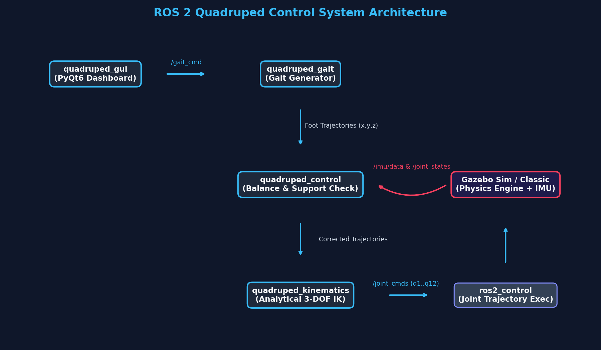
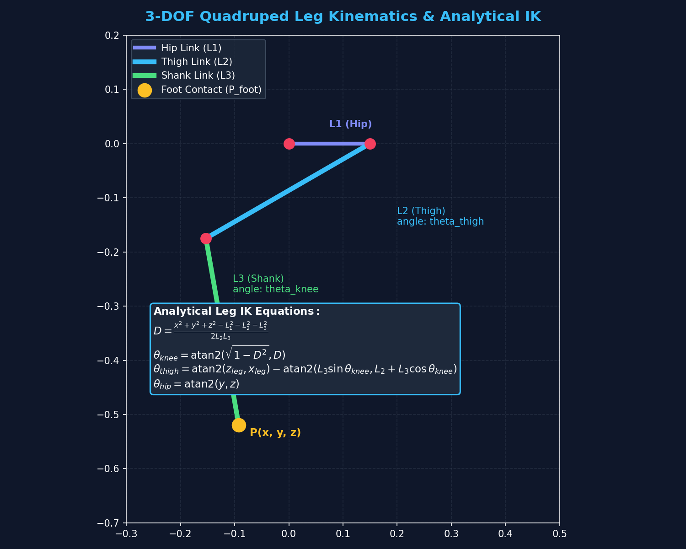
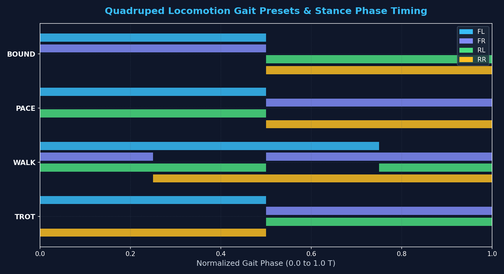
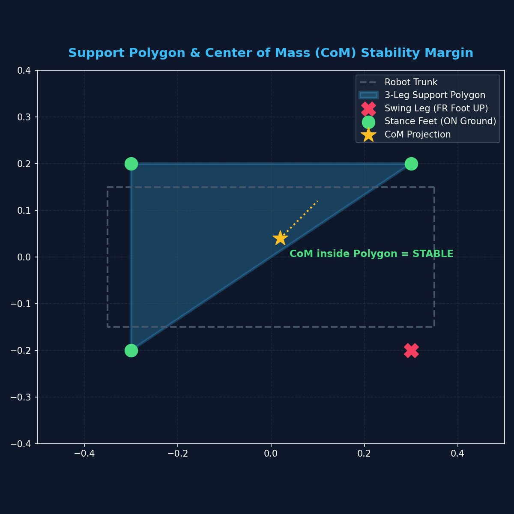

Josiah Saji
Robotics & Autonomous Systems Engineer
Architecting deterministic motion controllers, embedded micro-ROS topologies, and autonomous SLAM pipelines.
Illustrative visualization · Not connected to live robot telemetry
About Me
Robotics Engineer at Evolve Robotics, graduated B.Tech in Robotics & Automation from Saintgits College of Engineering, Kerala (2025).
I specialize in ROS 2, embedded systems, and autonomous robotics — turning ideas into deterministic machines that operate reliably in real environments. My work spans hardware-software integration, multi-sensor telemetry, mobile robot navigation, kinematics, and embedded control.
I have built and deployed systems ranging from ESP32-powered differential-drive robots with micro-ROS to full SLAM-capable mobile robots and a 12-DOF quadruped locomotion framework in simulation. I care deeply about the engineering rigor behind systems that have to perform without failure in the real world.
Beyond engineering, I have led technical workshops in ROS 2 and embedded systems, served as Secretary of the college Robotics Society, and coordinated with industry professionals to deliver hands-on robotics training.
Projects
Autonomous Tilling Robot
Small-scale farmers in Kerala rely on manual or expensive tractor-based tilling, leaving a gap for an affordable, GPS-guided autonomous solution capable of real-field deployment.
Built a rear-wheel-drive agricultural robot with a front two-stroke engine tilling mechanism. Integrated a LiFePO4 battery pack for sustained runtime, GPS for field navigation, and a remote-operation interface for manual override.
Functional hardware prototype submitted to YIP 7.0 featuring a custom chassis, high-torque drivetrain, LiFePO4 power distribution, and remote teleoperation interface. Undergoing multi-acre field furrow depth calibration.
- LiFePO4 Battery
- GPS Navigation
- Embedded Control
- Remote Operation
- Two-Stroke Engine




Quadruped Locomotion Framework
Wheeled robots cannot navigate unstructured, cluttered, or stepped terrain. A bio-inspired legged architecture requires deterministic inverse kinematics and smooth swing trajectories to avoid ground impact shock.
Designed a 12-DOF quadruped architecture in ROS 2 Humble. Formulated closed-form analytical 3-DOF leg kinematics, 3D parametric cycloid foot trajectories, multi-gait sequencing (Trot, Walk, Crawl, Bound), and an active IMU stabilization loop.
Formulated a closed-form analytical 3-DOF inverse kinematics solver without iterative Jacobian matrix inversion or divergence risk, validated in Gazebo Classic & RViz2 with a 100 Hz locomotion controller timer loop streaming trajectories to a 200 Hz ros2_control controller manager.
- ROS 2 Humble
- Analytical 3-DOF IK
- 3D Cycloid Gait
- ros2_control
- Gazebo Classic 11
ROS 2 Mobile Robot & SLAM
Translating theoretical robot designs into simulation-ready, navigable systems requires a robust middleware stack built from the ground up using modern ROS 2 conventions.
Modeled a 2WD differential mobile robot with URDF/Xacro and TF2 trees in RViz. Built an autonomous pipeline with SLAM Toolbox for laser-scan mapping, Nav2 for dynamic costmaps, and simulated in Gazebo.
Modular open-source framework with URDF/Xacro descriptions, Gazebo Harmonic simulation, and configured SLAM Toolbox and Nav2 stacks; RPLidar A1 driver integrated for hardware bringup.
- ROS 2 Jazzy
- SLAM Toolbox
- Nav2
- URDF / TF2
- RViz2 & Gazebo
ESP32 micro-ROS 2WD Robot
Bridging high-level ROS 2 navigation to resource-constrained microcontrollers over wireless links without heavy Linux single-board computers or fragile serial converters.
Deployed native micro-ROS on an ESP32 over Wi-Fi UDP. Implemented 4-pin pure PWM motor control with differential mixing, deadband static friction compensation, and safety failsafes.
Achieved deterministic Wi-Fi UDP command execution via micro-ROS agent, 1 kHz hardware PWM switching, and automated 500 ms failsafe motor cutoff on packet loss, benchtop tested on real hardware.
- ESP32
- micro-ROS (UDP)
- 4-Pin PWM Driver
- Kinematic Mixing
- Failsafe Watchdog
Skills
Robotics & ROS2
Languages
Embedded Systems
Navigation & Sensing
CAD & 3D Modeling
Experience & Leadership
Working on robotics software development at Evolve Robotics. Applying expertise in ROS 2, embedded systems, and autonomous robot design to real-world engineering challenges.
Serving as Secretary of the college Robotics Society — managing operations, coordinating technical events, and driving the society's robotics agenda forward.
Organized and conducted robotics workshops covering ROS2, ESP32, and micro-ROS. Coordinated with industry speakers and faculty to deliver high-quality learning experiences.
Led the design and development of the Autonomous Tilling Robot, submitted to YIP 7.0. Managed end-to-end system integration from mechanical design to embedded control systems.
📈 Future Goals
Develop advanced autonomous robots for agriculture at scale
Integrate AI and machine learning into real-time robotics systems
Build scalable robotic platforms that solve genuine real-world problems
Media & Content
Field Robotics & POV Testing
Captures first-person field testing and machinery dynamics using a GoPro Hero 12. High-frame-rate, wide-angle documentation of agricultural rover maneuvers and mobile terrain traversal.
Field Testing · 4KHardware & PCB Macro Documentation
Uses a Sony Alpha 6300 mirrorless camera for macro circuit inspection, component solder verification, and mechanical chassis fabrication logs.
Sony α6300 · MacroTechnical Demos & Training Content
Produces technical demonstrations and instructional video content covering ROS 2 workspaces, embedded micro-ROS bringup, and hands-on robotics society workshops.
Technical MediaContact
Have a project, opportunity, or just want to talk robotics? Reach out.
📍 Kerala, India